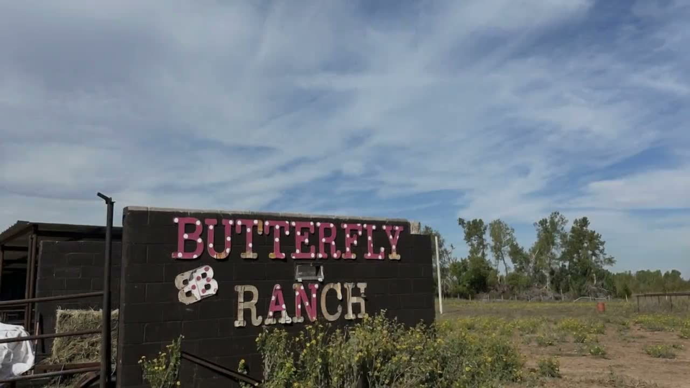
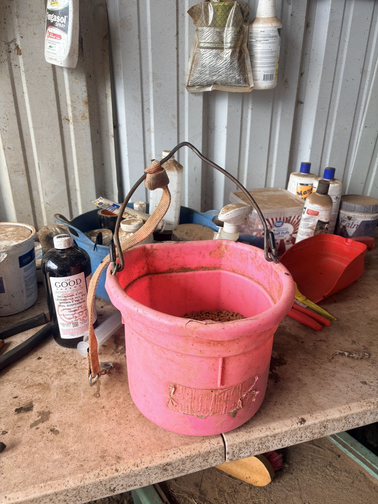
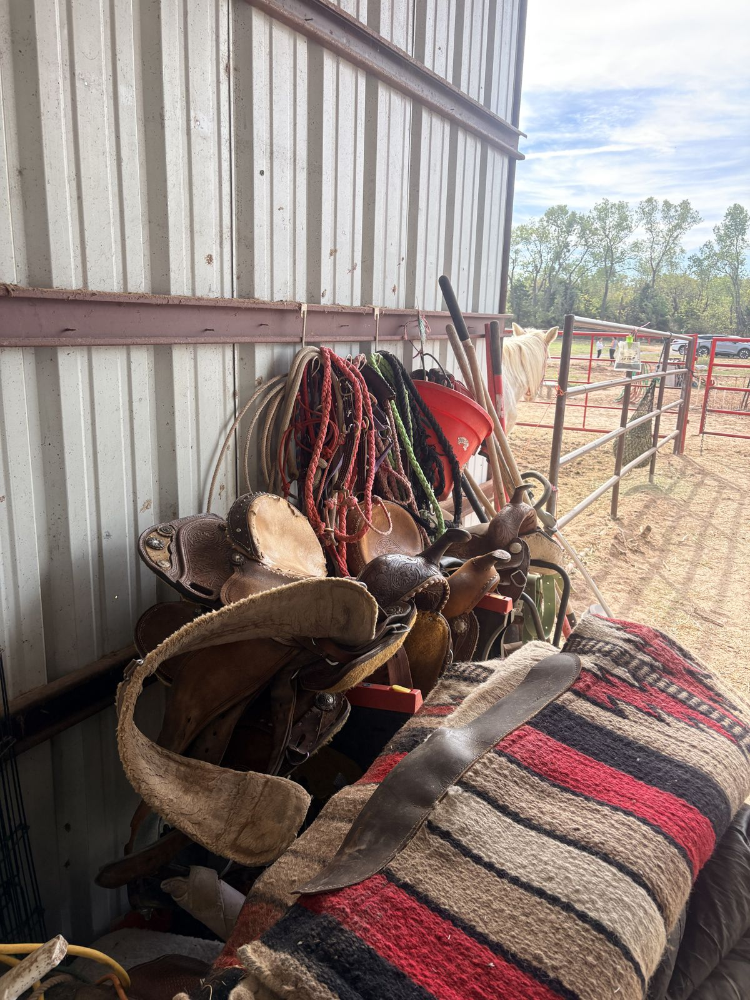
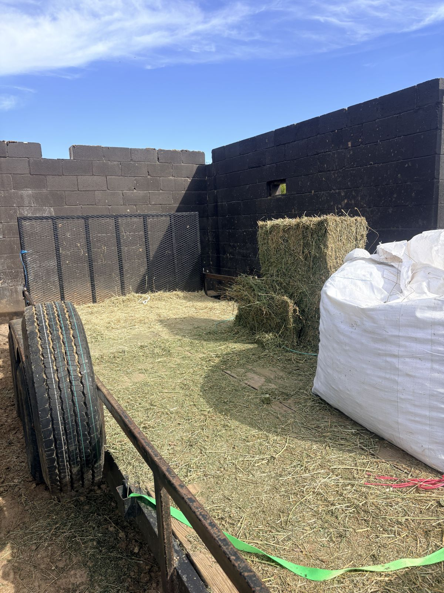
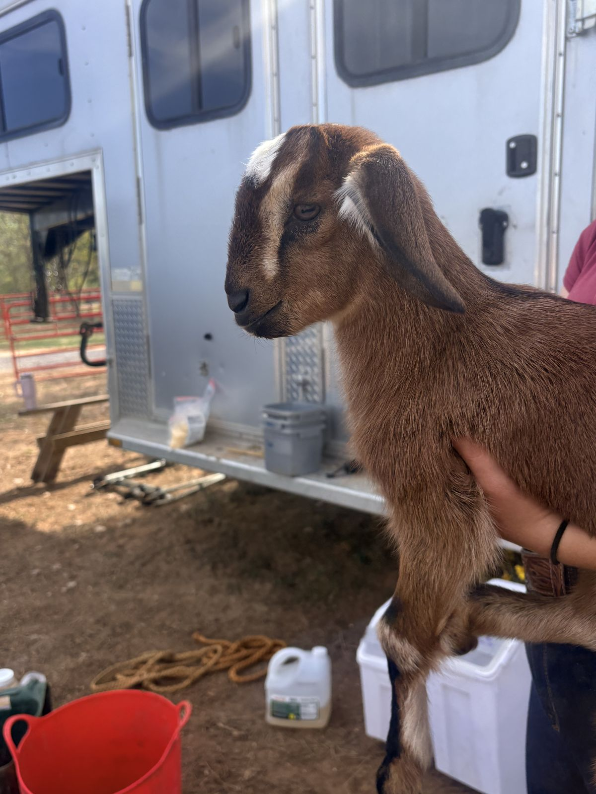

Every horse has a story. Here, you get to see it.
We take in horses from kill pens, abusive homes and surrenders, bring them back to health, and match each one with a student who keeps showing up. You can follow every horse from the day it arrives.
A horse that nobody wanted gets fed, shod, doctored and worked, slowly, until a kid shows up and keeps showing up. That's the whole program.
The horses at the ranch right now
Every horse here has its own page, updated as it recovers, with what was spent and who helped.


Rescue, rehab, and a student of its own
- 1
Rescue
Horses come to us from dangerous places: kill pens, abusive homes, and owners who can no longer keep them.
- 2
Rehabilitation
Feed, supplements, farrier, vet care and time. The work goes at the horse's pace, not ours.
- 3
A student of its own
When a horse is ready, it meets the students in our program. Each summer a student is assigned a horse to care for, and some go on to become its owner.

What the ranch is, in plain figures
The dashes are deliberate. The ranch fills these in from its own records rather than publishing a guess.
horses photographed at the ranch on 23 October 2026
the year Braxton started the ranch
horses rescued so far (to confirm)
what one horse costs each month see where it goes
Give once, or a little every month
Every gift goes to hay, feed and care, and you'll hear back about the horse it helped.
Lessons, camps, and a horse to look after
Kids and adults come out to ride, learn horsemanship and get away from city life. In summer, students in the rescue program are each assigned a horse to care for.





Hear how the horses are doing
One email a month, with the horse you helped and what it cost. No more than that.